2024
SUNNY
레저
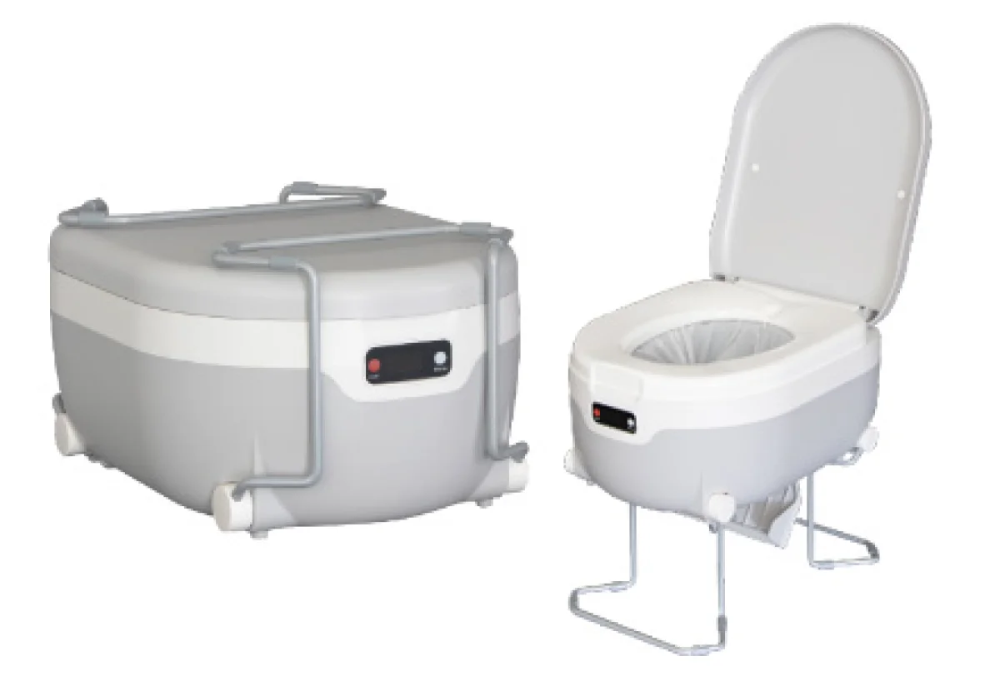
가볍고 작은 수지 소재의 레저용 모델을 출시했습니다. 조작이 간편해 RV 사용자와 아웃도어 활동을 즐기는 사람들에게 호응을 얻었습니다.
여러분의 성원으로 WRAPPON은 2005년 출시 이후
2025년에 20주년을 맞이했습니다. 감사합니다.
독자적인 열 밀봉 화장실 시스템
레저 · 재난 · 건설 현장 · 의료 · 돌봄
2024
레저

가볍고 작은 수지 소재의 레저용 모델을 출시했습니다. 조작이 간편해 RV 사용자와 아웃도어 활동을 즐기는 사람들에게 호응을 얻었습니다.
2024
돌봄
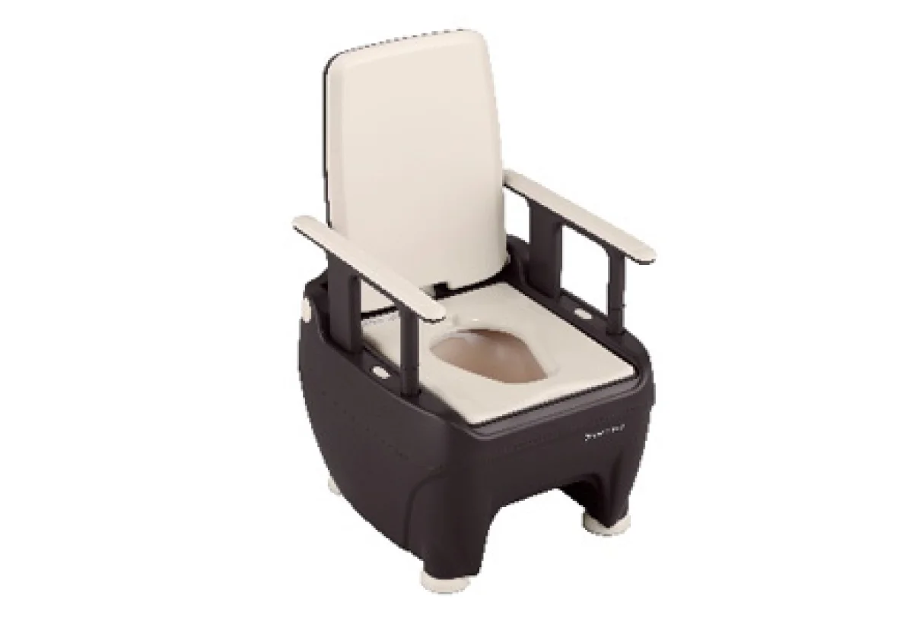
자동 포장 기능을 갖춘 수지 소재의 모델을 출시했습니다. 가벼운 무게와 합리적인 가격, 사용자 중심의 설계를 지향했습니다.
2022
돌봄
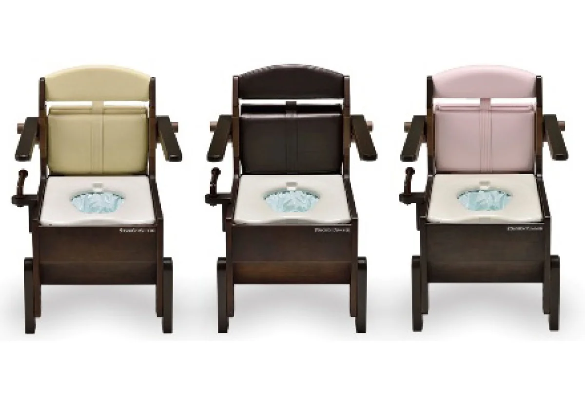
외장 케이스의 자체 생산을 실현했습니다. BRIO의 위로 젖히는 팔걸이를 발전시키고 좌석 등 부품을 공통으로 사용해, 사용자가 제품을 비교하고 선택하기 쉽도록 했습니다.
2018
돌봄
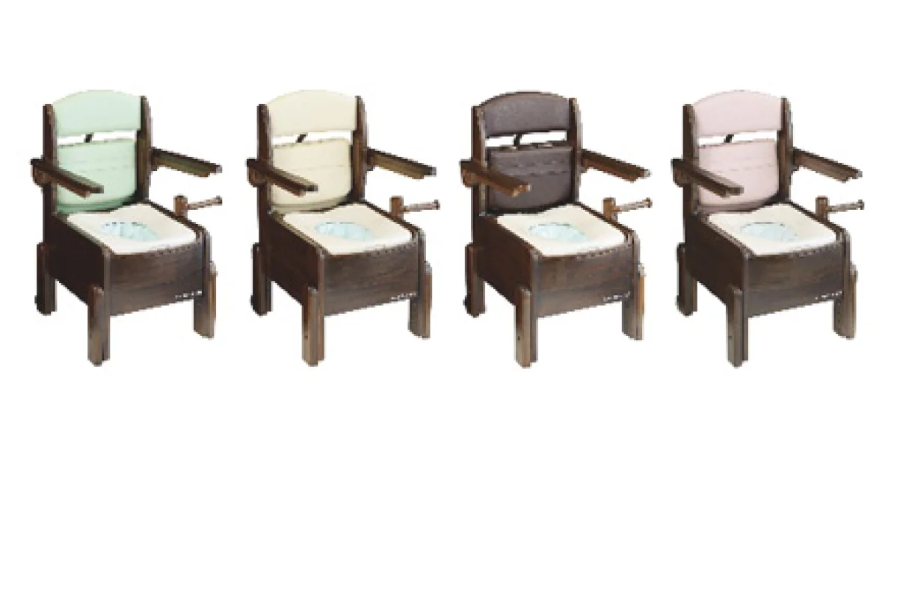
위로 젖히는 팔걸이와 오물통 호환 기능을 갖춘 소형 모델을 공동 개발했습니다. 사용자의 상황에 맞게 더욱 유연하게 활용할 수 있도록 했습니다.
2017
돌봄
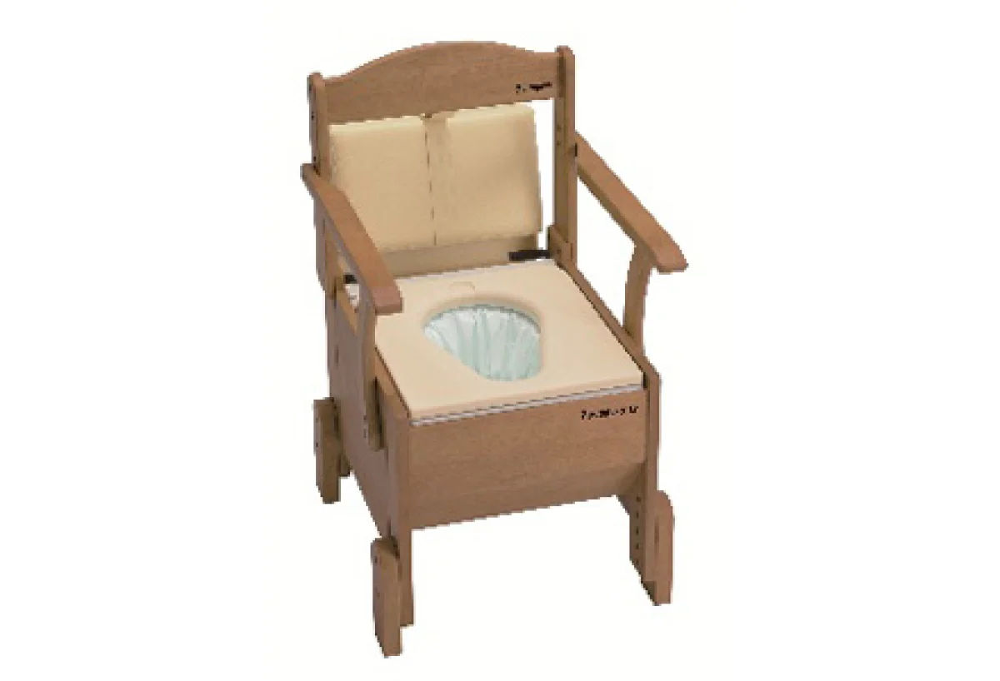
위로 젖히는 팔걸이와 오물통 호환 기능을 갖춘 소형 모델을 공동 개발했습니다. 사용자의 상황에 맞게 더욱 유연하게 활용할 수 있도록 했습니다.
2016
돌봄
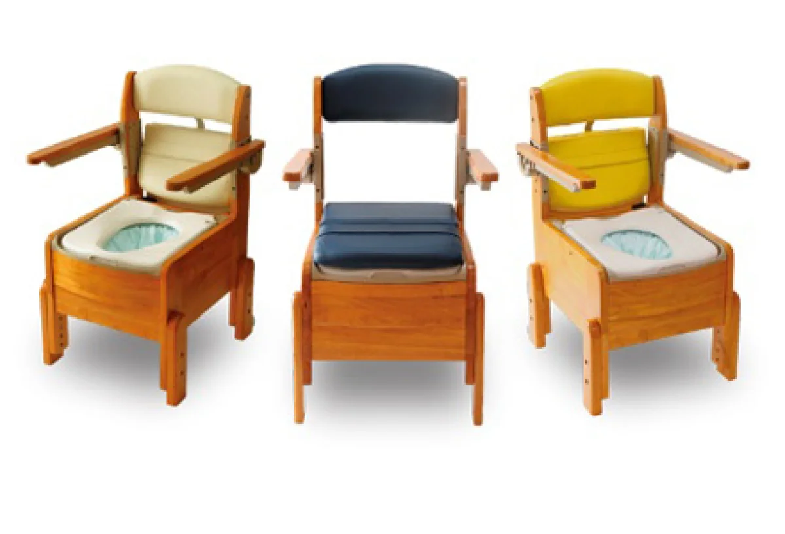
위로 젖히는 팔걸이와 오물통 호환 기능을 갖춘 소형 모델을 공동 개발했습니다. 사용자의 상황에 맞게 더욱 유연하게 활용할 수 있도록 했습니다.
2014
레저 · 재난 · 의료 · 건설 현장
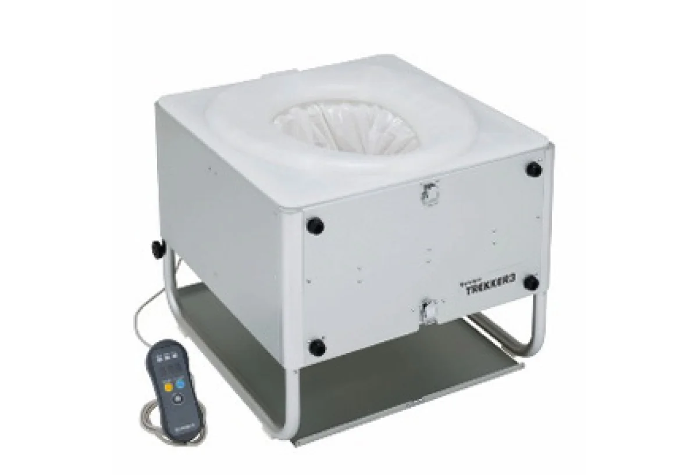
안정성과 사용성을 높이기 위해 작동 장치와 리모컨을 새롭게 설계했습니다. 이후 구마모토 지진 대피소에서 500대 이상이 사용되었으며, 서일본 호우 때에도 폭넓게 활용되었습니다.
2013
돌봄
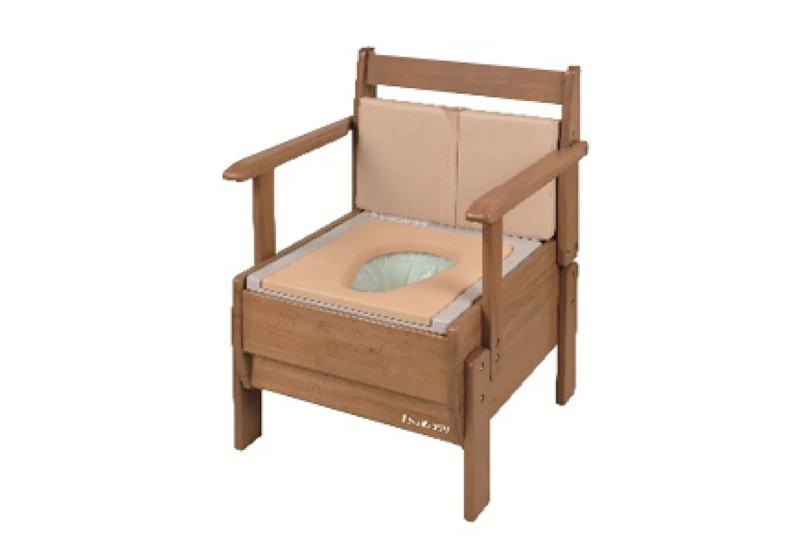
일본의 장기요양보험 제도를 고려해 설계한 모델로, 비용을 낮추기 위해 필름 시스템을 개선했습니다. 돌봄 시장에 자동 포장식 화장실을 알리는 핵심 제품이 되었습니다.
2012
돌봄
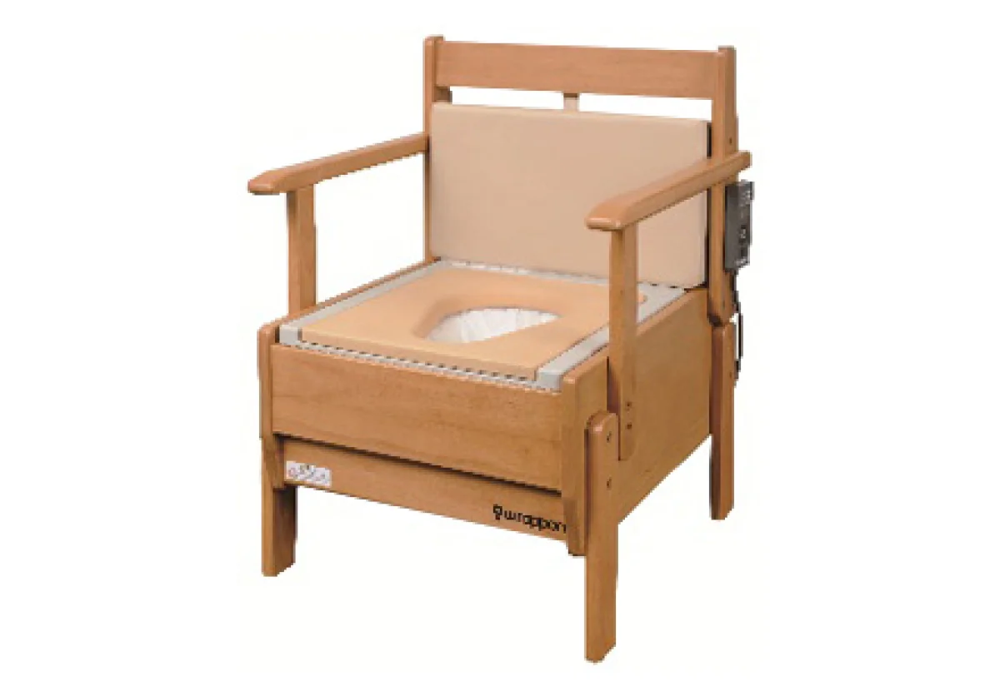
사용하기 편리한 필름 카세트 방식을 처음 적용한 돌봄용 모델입니다.
2011
레저 · 재난 · 의료 · 건설 현장
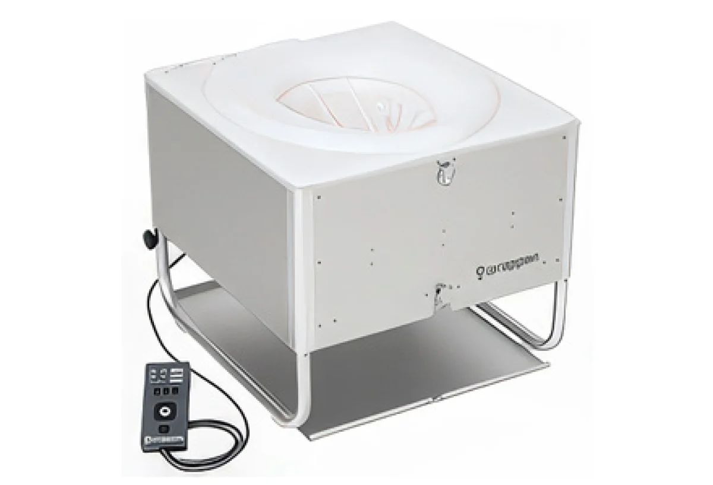
TREKKER의 개선 모델로 개발했으며, 자동 포장 장치의 성능을 높였습니다.
2008
레저 · 재난 · 의료 · 건설 현장
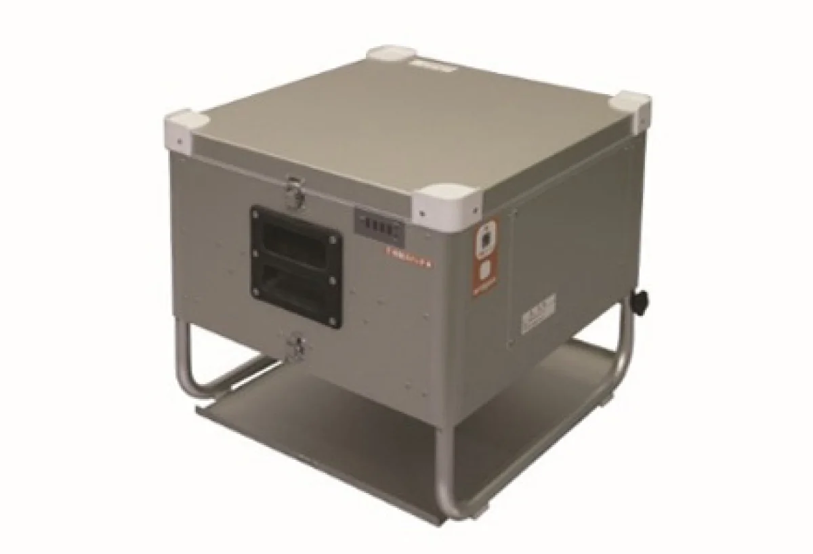
대피소에서 제품을 사용한 분들의 의견을 바탕으로 자동 포장·절단·밀봉 방식의 새로운 이동식 화장실 ‘WRAPPON TREKKER’를 개발했습니다.
2005
돌봄
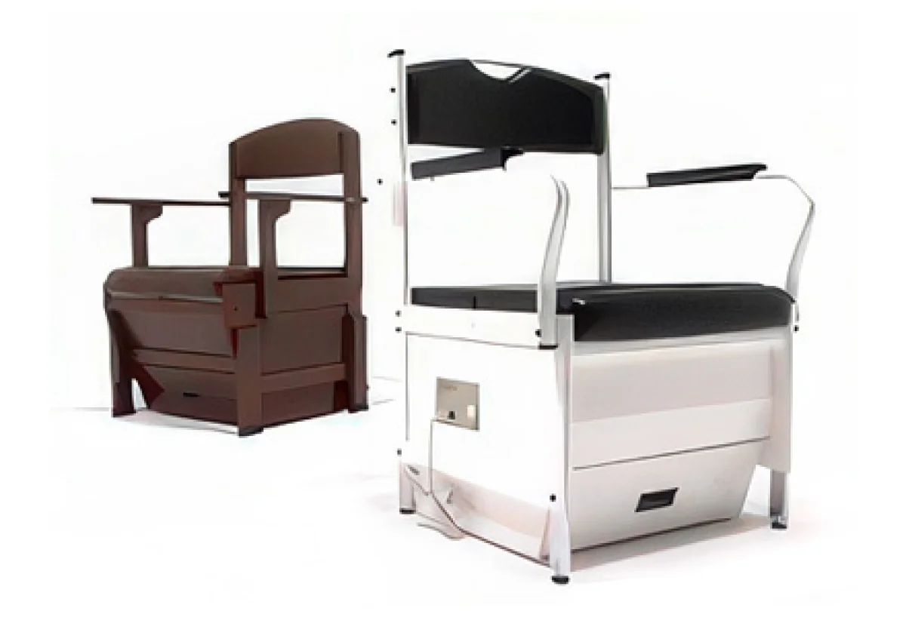
일본 최초의 자동 포장식 화장실로 출발했습니다. 처음에는 돌봄을 위해 개발했으며, 이후 재난 대피소에서도 사용되었습니다.
한국 고객은 여기로 연락해 주세요.
랩폰코리아 · 패밀리카라반
경기도 용인시 기흥구 구성로 330